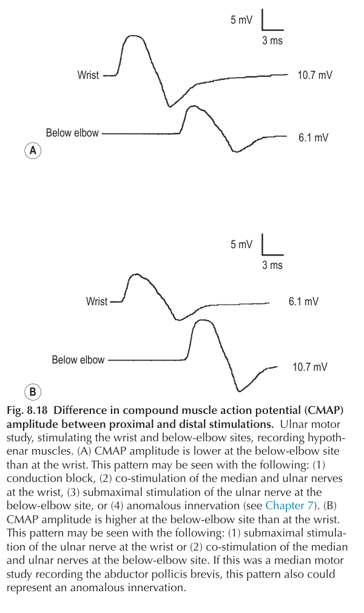

Sinir fizyolojisiNORMAL · SABİTKayıt elektrotlarıSABİTGerçek maksimal BKAP10,7 mV
Bilekte rekrutman24/24 · 10,7 mV
Dirsek altında rekrutman24/24 · 10,7 mV
Proksimal/distal amplitüd%100
Görünen örüntüUYUMLU
Teknik karşılaştırma geçerlidir: Her iki uyarım noktası da aynı maksimal BKAP'ı üretir.

Kitap kaydı · ulnar motorA: bilek 10,7; dirsek altı 6,1 mV. B: bilek 6,1; dirsek altı 10,7 mV. Kitap her iki örüntünün de birden çok teknik veya anatomik nedeni olduğunu vurgular.
Sınır: Bu model yalnız submaksimal mekanizmayı izole eder. örüntüsü tek başına tanı değildir; gerçek iletim bloğu, ko-stimülasyon ve innervasyon anomalileri ayrıca dışlanmalıdır.